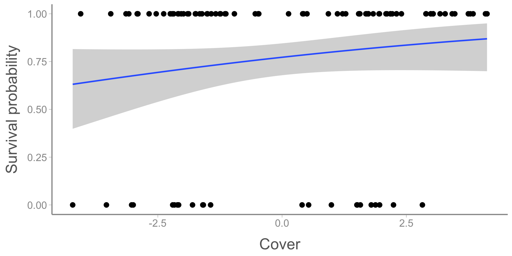
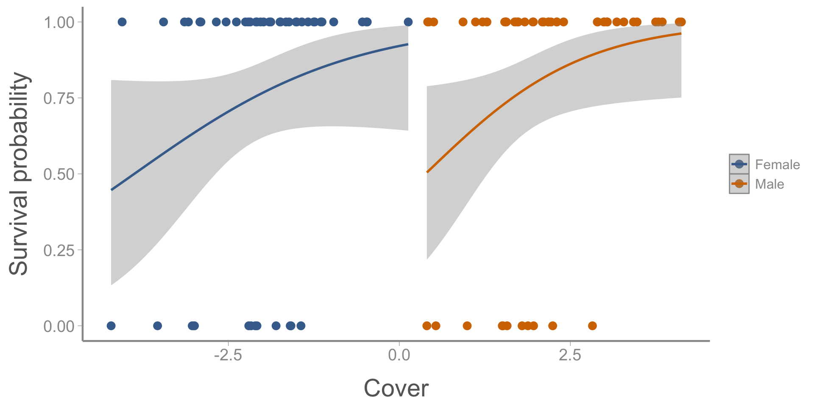
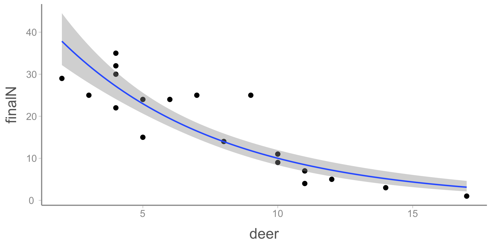
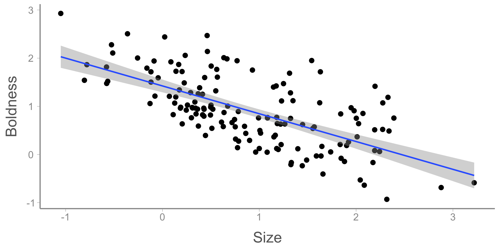
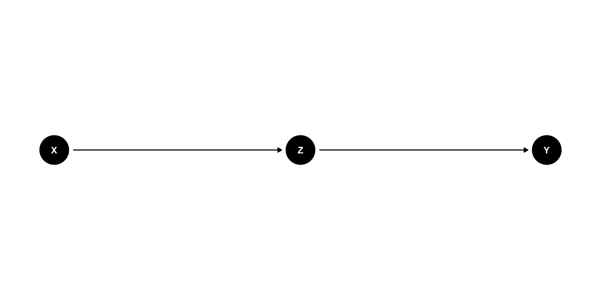
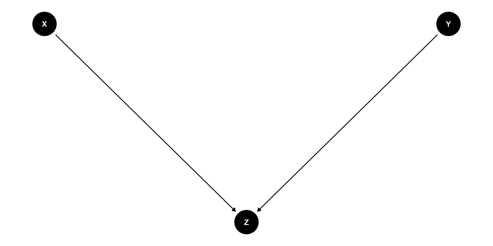
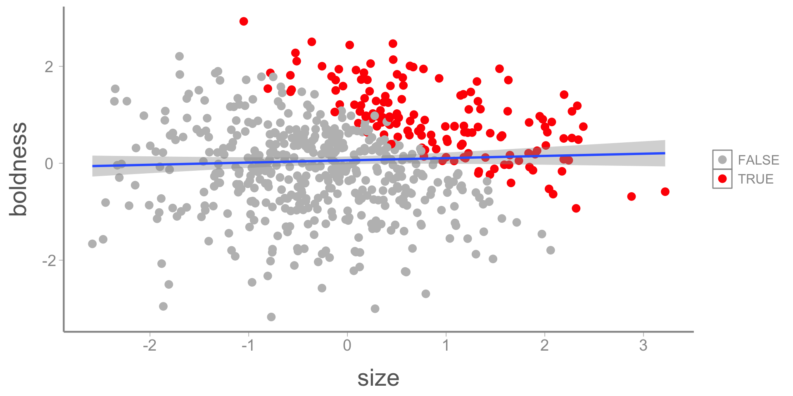

FANR 6750
Fall 2026
In the last two lectures, we learned about fitting and interpreting multiple regression models
The flexibility of multiple regression models makes them powerful statistical tools but also raises an important question:
How do you know what predictors to include in your model?
In experimental settings, the structure of multiple regression models is often determined by the experimental design
All treatments are included as predictors in the model
Interactions are included based on a priori hypotheses1
In observational studies, it is is often less clear which combination(s) of predictors should be included in a model
It is increasingly common to have dozens (or more) predictors associated with each reponse
As the number of predictors grows, the number of potential combinations grows even faster
Although deciding which predictors to include is really an issue of selecting among alternative models, this lecture is not about “model selection” in the conventional sense
In fact, this lecture is not really about statistics at all. It is about using our scientific understanding to learn about cause and effect
Warning: Some of the material in this lecture goes against conventional practices used in ecology/natural resources
Although causal inference is a well-developed field in its own right, these topics are not widely used in natural resources
In fact, many common practices you will encounter or be advised to use2 actually conflict with best practices for causal inference
Often, there is no right or wrong “answer.” Using and defending your choices requires confidence and some degree of comfort with uncertainty
The Bleary Groundfinch is an imaginary bird species that is sexually-dimorphic (males are larger than females)
During winter, both sexes defend individual territories that are mainly used for nocturnal roost sites
The species roosts on the ground and it is thought that they compete for territories with dense shrub cover to minimize predation risk
To determine whether shrub cover influences survival, researchers radio-tagged an equal number of male and female birds and then tracked them for several weeks, recording the fate (survived or died) of each bird
They also located the nocturnal roost location of each individual and used vegetation surveys to quantify the average shrub density of each roost location
Question: Which covariates (cover, sex, or both) should the researchers include in their analysis? Why?
Initially, the researchers fit two regression models3, one for each covariate

# A tibble: 2 × 5
term estimate std.error statistic p.value
<chr> <dbl> <dbl> <dbl> <dbl>
1 (Intercept) 1.10 0.333 3.30 0.000981
2 SexMale 0.217 0.476 0.456 0.648 Next, they fit a model with both covariates: ::::{.columns}

::::
Questions:
What are your conclusions about the effect of sex and cover on survival?
Why might the effect size (and sign) of sex have changed so dramatically when cover was added to the model?
A grad student is studying efforts to recover populations of the made-up, endangered Heirloom Trillium.
The student is sent a dataset containing 20 years of surveys from a nature preserve containing a large population of the species.
The data includes:
Question: Which covariates should the student include in their analysis? Why?
The student initially notices that there is a strong negative association between mast and final abundance
Nervous that his analysis was insufficient, the student decided to fit additional models to test whether other predictors may also influence Trillium abundance.

# A tibble: 3 × 5
term estimate std.error statistic p.value
<chr> <dbl> <dbl> <dbl> <dbl>
1 (Intercept) -12.5 6.26 -2.00 0.0613
2 mast -7.42 1.17 -6.37 0.00000701
3 initN 1.12 0.235 4.75 0.000186 # A tibble: 4 × 5
term estimate std.error statistic p.value
<chr> <dbl> <dbl> <dbl> <dbl>
1 (Intercept) 5.73 3.94 1.45 0.165
2 mast -1.71 0.962 -1.78 0.0948
3 initN 0.957 0.117 8.15 0.000000432
4 deer -1.74 0.235 -7.39 0.00000152 Questions:
Researchers are studying the traits that influence “boldness” in fictitious Fruitcake Lizards
The researchers searched for and captured lizards that they encounter, then used a well-established method to quantify the boldness of each individual
The researchers used a linear model to quantify the relationship between body mass and boldness and found a strong negative association
This result conflicts with previous studies of captive-reared Fruitcake Lizards that found no relationship between body size and boldness

Question: Assuming that captive-rearing has no effect on boldness, why might the researchers have observed this strong, negative association?
The previous examples, although somewhat simplified, illustrate a common scenario you will encounter: multiple models can be fit to the same data set and your conclusions depend on which model you choose
Conventional approaches to selecting among models are based on associations among predictor variables (e.g., strong correlations) and/or some type of model selection procedure (e.g., AIC)
As with any statistical procedure, these approaches base modeling decisions on the strength of statistical associations
However, we should usually base these decisions on our understanding of why variables are associated with each other
From lecture 7, we learned that: Correlation = Causation + Confounding + Noise
The goal of manipulative experiments is to remove the effects of confounding by randomizing treatments or holding confounding sources of variation constant4
But how do we know what sources of variation we need to worry about when designing experiments?
Example: A common question in life history studies is whether there is a trade off (i.e., negative relationship) between reproduction and survival. Researchers monitor the annual reproductive effort and subsequent survival of wild coyotes and find that, in contrast to their predictions, individuals that raised more offspring had higher survival than individuals that raised fewer offspring
We can’t conclude that higher reproductive effort causes higher survival because coyotes with different reproductive success are unlikely to be exchangeable
Individuals with high reproductive success likely differ in many ways from individuals with low reproductive success. If these other sources of variation influence survival, they could be the cause of the differences observed by the researchers
If the researchers want to design an experiment to test this question, what are some sources of variation they need to consider as part of their experimental design?
When thinking about sources of variation, it can be helpful to visualize hypothesized relationships among variables
In our example, we might hypothesize the following:
This type of graphical model is referred to as a directed acyclical graph (DAG), and they are central to many causal inference methods
DAGs are graphical models that describe causal relationships between variables
The purpose of a DAG is to articulate the direction of causal effects that influence both the response variable and covariates
All DAGs must be:
Directed: \(X \longleftrightarrow Y\) is not possible
Acyclic: \(X \longrightarrow Y \longrightarrow Z \longrightarrow X\) is not possible
DAGs:
Do not encode anything about the form of relationships (e.g., direction, non-linearity, interactions, etc.)
Should include all important variables5, regardless of whether you have data on them or not!
The benefit of DAGs is that they allow us to identify variables that could prevent conclusions about whether \(X\) causes \(Y\)
As we’ve already seen, one type of variable DAGs help us identify are confounders
Confounders open backdoor paths that can create statistical associations between \(X\) and \(Y\), even when no causal effect exists6
The goal of randomization is to close these backdoor paths by removing the arrow between \(Z\) and \(X\) (i.e., closing the backdoor path)7
So far, we’ve used very simple graphs to show confounding caused by a single variable \(Z\).
However, confounding can often show up in more complex DAGs in ways that are not always quite so obvious.
Do you see any confounders in the following graphs?
In experimental settings, we can remove the effects of confounders by either holding them constant or randomizing treatments
But how do we remove the effect of confounders in observational studies?
Multiple regression!8
In observational studies, we use multiple regression to accomplish statistically what experiments handle using design/randomization
Remember from lecture 12 how to interpret the slope parameters from multiple regression models:
Sound familiar?
This is what is meant by “conditioning on” or “controlling for” a variable
Note: We do not have to condition on every confounder. Instead, we generally try to find the minimal adjustment set that blocks confounding paths
Let’s use a DAG to figure out what might be happening in example 1
What is the relationship between predation risk, cover, and sex?
From this DAG, it is clear that sex is a confounder of both cover and predation.
Because it is a confounder, we have to control for it to quantify the causal effect of cover on survival9
We can also conclude that the model that only includes sex is the wrong model for our question. No model selection necessary!
One of the most commonly used justifications for excluding covariates from a model is multicolinearity, which is often defined as predictor variables that are strongly correlated with each other10
Typical advice is to remove covariates that have strong, pairwise correlations (e.g., > 0.7)
But this is NOT good advice:
Including correlated predictors does not violate any assumptions of linear models
The purpose of multiple regression is to measure the effect of one predictor while holding others constant
As we have seen, confounding variables need to be included because they are correlated
Remember from the causal inference lecture:
So in this case, we expect \(Z\) and \(X\) to be correlated because \(Z\) causes \(X\)11
If covariates are correlated because of confounding, you need to include the confounder
If covariates are correlated because they essentially measure the same thing, you should remove all but one
If covariates have a structural correlation (e.g., sum to 1), …
Be prepared for larger SE (but that’s what is supposed to happen)
Confounders are only one type of causal relationship. Several others are important to know about:
Mediators
Colliders
Competing exposures
As with confounders, DAGs are a critical tool for understanding and identifying each of these types of relationships
Mediators are variables that exist along a path between \(X\) and \(Y\)

Often, mediators are the mechanism that causes \(X\) to influence \(Y\)
In a DAG, mediators have arrows pointing from \(X\) and to \(Y\)
If \(Z\) is a mediator, including it in the model “blocks” the effect of \(X\)
Mediators can sometimes be included in models to test whether \(Z\) might be the mechanism
In some cases, including a mediator allows you to measure the effect of \(X\) that is not due to \(Z\)
Confounders are common causes of \(X\) and \(Y\), colliders are common effects of \(X\) and \(Y\)

In a DAG, colliders have arrows pointing towards them from both \(X\) and \(Y\)
Including colliders in models can cause
Competing exposures are variables that effect the response variable \(Y\) but are independent of the cause \(X\)
In a DAG, competing exposures have arrows pointing towards \(Y\) but not \(X\)
Including competing exposures in models does not directly influence inference about the effect of \(X\) on \(Y\)
Because competing exposures don’t influence causal inference about \(X\), choices about whether to include them in the model should be based on other considerations
Are they of interest?
Does including them provide more power for detecting the effect of \(X\)?
Does including them reduce precision of other model parameters?
Let’s return to the three examples from the beginning of lecture
Why did the effect of mast change when deer abundance was included in the model?
Because deer is a mediator, including it in the model removes the effect of mast. But that does not mean mast is not a cause of Trillium abundance!
What is the role of initial abundance?
Because initial abundance is not a confounder or a mediator, including it in the model does not bias estimates of deer or mast. But there are reasons to include it in the model!
In laboratory studies, there was no effect of body size on boldness. So why did the researchers studying wild lizards find this relationship?
Lizards only end up in the data set if they are captured
Who gets captured? Lizards that are big or bold
Who doesn’t get captured? Lizards that are small and shy
In the observed sample, small lizards are almost guaranteed to be bolder than average12
In the population, there is no link between boldness and body size

Capture acted as a collider, which created a relationship where none actually existed.
Building DAGs can be overwhelming due to the complexity of ecological systems
Start with the response variable and think about variables that are likely to have meaningful effects
If you were to do conduct an experiment, which variables would you try to hold constant? What variables would you try to randomize?
Colliders are challenging to understand and identify in part because they are often not variables we measure
When colliders are measured, they should not be included in the model
When colliders are not measured, they are essentially in the model by default
Multiple regression is…
Using multiple regression to disentangle the effects of different covariates requires
DAGs are graphical models that represent hypothesized relationships between variables that influence (or are influenced by) \(X\) and \(Y\)
DAGs are useful for identifying confounders, mediators, and colliders
If your goal is to estimate causal effects of \(X\) on \(Y\), your regression model must include known confounders13
+ Note that this does not depend on pairwise correlations, AIC scores, etc. Statistical control is equivalent to randomization in manipulative experimentsYou should treat mediators with caution. Including mediators blocks paths between \(X\) and \(Y\), which will change results
Beware of colliders, they are often lurking behind the scenes
+ Colliders can also cause spurious relationships, which make them tempting to ignoreIdentifying confounders, mediators, and colliders is a scientific process, not a statistical one
We have purposefully used simple examples in this lecture. In reality, ecological systems are very complex and constructing a complete DAG is challenging
Next time: Multiple regression (and more causal inference)
Reading: Fieberg chp. 3.2-3.5 and Fieberg chp. 7.3
Assuming adequate replication of all treatment combinations
including in previous versions of this course
specifically, they fit logistic regression models, which used for binary response data. We will learn more about logistic regression later in the semester but conclusions about the direction/significance of slope coefficients are the same as for linear regression
Experimental design helps with confounding but how do we deal with noise?
Important is a vague term but generally a DAG should include any variables that could be biologically-relevant sources of variation
A common metaphor for DAGs is the flow of electricity. We want to know if electricity flows from \(X\) to \(Y\). Backdoor paths are those that allow electricity to flow into both \(X\) and \(Y\) from other variables
Closing the door is equivalent to blocking the flow of electricity
Multiple regression is not the only method to address confounding, but it is the only one we will cover in this class. For an overview of other methods, see…
Assuming there are no other confounders
Though this is not quite the actual meaning
There are other reasons they may be correlated, including a shared confounder of \(X\) and \(Z\). Also, \(Z\) may not be the only cause of \(X\). Regardless, the effect of \(X\) on \(Y\) is still confounded by \(Z\)
Otherwise they wouldn’t be captured
Technically, not all confounders need to be included. Only the minimal adjustment set need to block all open paths between \(X\) and \(Y\) need to be included